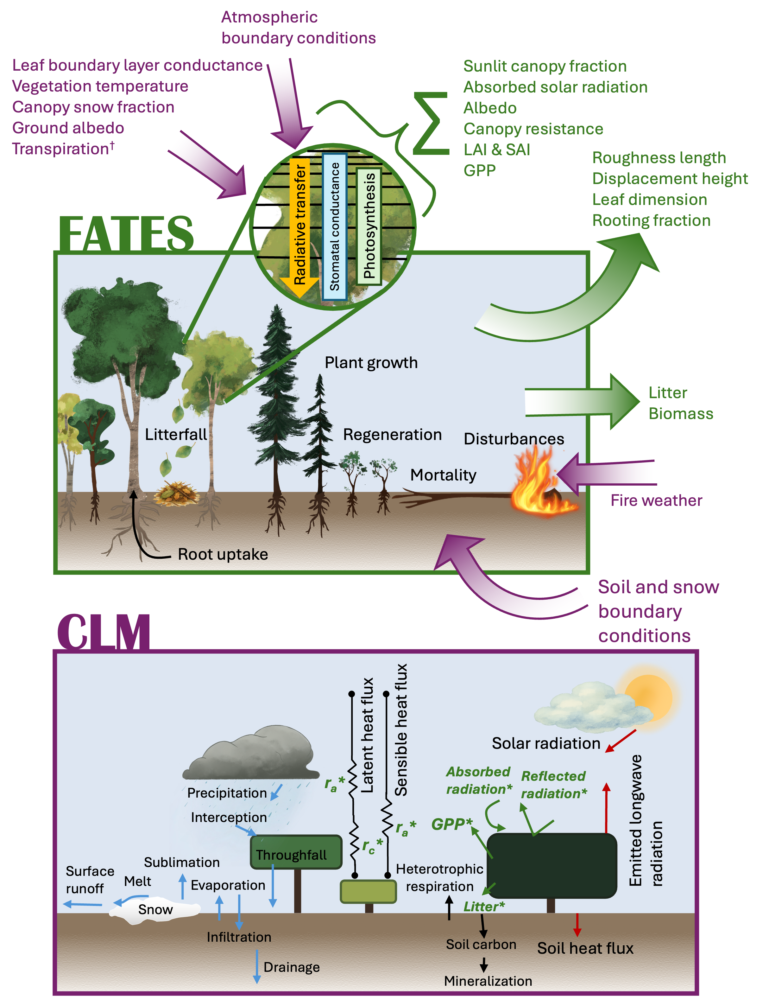
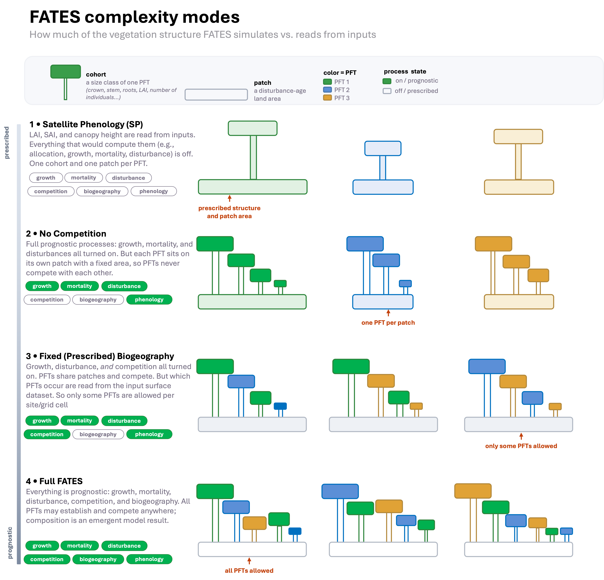

3: Run CLM with FATES and modify input data#
FATES#
An important component of representing the land surface is accurately capturing vegetation dynamics and their impact on and interaction with the Earth system. Ecosystem demography models explicitly represent the size structure and successional state of vegetation, through direct simulation of plant growth, mortality, and regeneration. Thus, important vegetation characteristics such as vegetation canopy height, succession, and even potential biome shifts become emergent properties of the model rather than being prescribed.
FATES is the “Functionally Assembled Terrestrial Ecosystem Simulator”. FATES is a cohort model of vegetation competition and co-existence, allowing a representation of the biosphere which accounts for the division of the land surface into successional stages, and for competition for light between height structured cohorts of representative trees of various plant functional types. Individual plants within FATES are grouped into “cohorts” of the same size and PFT, and these cohorts compete for light and resources on individual “patches” that represent different disturbance histories. This type of ecosystem heterogeneity is in contrast to the default vegetation model in CLM, which uses two (sunlit & shaded) “big leaf” canopies per PFT, each on their own patch, with no representation of within-canopy structural heterogeneity or disturbance history.
When CLM is coupled to FATES (“CLM-FATES”), CLM provides site and soil conditions and atmospheric forcing, while FATES simulates plant physiological, vegetation demography, and biogeochemical processes.

Processes simulated in CLM-FATES by each model. Top: processes simulated by FATES when connected to CLM. Arrows in purple indicate conditions supplied to FATES by CLM. Arrows in green indicate conditions supplied to CLM by FATES. Bottom: Processes simulated by CLM when connected to FATES. Green starred variables are simulated and provided by FATES or in the case of aerodynamic resistance (ra) are influenced by the FATES-provided roughness length, displacement height, and leaf dimension. †: Only used in FATES hydraulics mode. From Foster et al. (202).
FATES Complexity Modes#
Currently, FATES can be run in several different “complexity modes”, where parts of the vegetation model are driven by input data rather than simulated. These modes can be used to facilitate calibration, test features, or run simulations more quickly. These modes are:
Satellite Phenology (SP) mode: this mode is designed to run with leaf area index (LAI), stem area index (SAI), and canopy height (HTOP) as input to the model. As such, all processes that are normally used to calculate these values are turned off (e.g., mortality, allocation, etc.)
No-Competition Mode: this mode runs with full complexity in terms of processes, but places each FATES PFT on its own patch. As such, PFTs do not compete with one another. The patch area of each PFT is determined from the input CLM surface dataset. However, please note that the PFTs in the FATES parameter file do not always map one-to-one with the CLM PFTs on the surface dataset. See the FATES parameter fates_hlm_pft_map on the FATES parameter file for the correct mapping of FATES to CLM PFTs.
Fixed Biogeography Mode: this mode turns off prognostic spatial changes in the distribution of vegetation and instead, the model uses input data to determine which PFTs are present at any given gridcell. The PFT composition in each gridcell is derived from the input CLM surface dataset.
Full FATES Mode: All processes are turned on an PFTs are allowed to grow anywhere.
Note that there are different combinations of no-competition and fixed biogeography mode that will result in different model behaviors. See the FATES namelist documentation for these options.

We will be running FATES in Satellite Phenology mode. This can be done by either choosing an SP compset (e.g. ) or manually setting this via the user_nl_clm file, with the parameters use_fates_sp, use_fates_nocomp, use_fates_fixed_biogeog. Check out the online documentation for more information on these parameters.
Using query_config again we learn more about the FATES compset we will use:
cd /glade/u/home/$USER/code/my_cesm_code
cime/scripts/query_config --compsets clm | grep "I2000Clm60FatesSpCrujraRsGs "
Which returns the following: I2000Clm60FatesSpCrujraRsGs : 2000_DATM%CRUJRA2024b_CLM60%FATES-SP_SICE_SOCN_SROF_SGLC_SWAV
Which breaks down into:
Field |
Description |
|---|---|
2000 |
year 2000 conditions |
DATM%CRUJRA2024b |
Data Atmosphere Model using CRJRA 2024 forcing |
CLM60%FATES-SP |
CTSM with clm6_0 physics defaults for FATES vegetation model with Satellite Phenology |
SICE |
Stub Sea-ice |
SOCN |
Stub Ocean |
SROF |
Stub River model |
SGLC |
Stub Glacier model |
SWAV |
Stub Ocean Wave model |
FATES Control Case#
Create a case called i.fates.year1 using the compset I2000Clm60FatesSpCrujraRsGs at f19_f19_mt233 resolution.
Set the run length to 1 year.
Set the finidat in user_nl_clm:
finidat = '/glade/campaign/cesm/tutorial/diagnostics_tutorial_archive/i.fates.sp.spinup.update.clm2.r.2060-01-01-00000.nc'
Build and run the model.
Click here for hints
How do I set the finidat?
After running ./case.setup, open the user_nl_clm file using any text editing software and add:
finidat = '/glade/campaign/cesm/tutorial/diagnostics_tutorial_archive/i.fates.sp.spinup.update.clm2.r.2060-01-01-00000.nc'
How do I compile?
You can compile with the command:
qcmd -- ./case.build
How do I change the run length to 1 year?
Use xml variables: STOP_OPTION and STOP_N.
How do I check my solution?
When your run is completed, go to the archive directory and navigate to the subdirectory lnd/hist
cd /glade/derecho/scratch/$USER/archive/i.fates.year1
cd lnd/hist
(1) Check that your archive directory contains the files:
i.fates.year1.clm2.h0a.2000-01.nc i.fates.year1.clm2.h0i.2000-01.nc
i.fates.year1.clm2.h0a.2000-02.nc i.fates.year1.clm2.h0i.2000-02.nc
i.fates.year1.clm2.h0a.2000-03.nc i.fates.year1.clm2.h0i.2000-03.nc
i.fates.year1.clm2.h0a.2000-04.nc i.fates.year1.clm2.h0i.2000-04.nc
i.fates.year1.clm2.h0a.2000-05.nc i.fates.year1.clm2.h0i.2000-05.nc
i.fates.year1.clm2.h0a.2000-06.nc i.fates.year1.clm2.h0i.2000-06.nc
i.fates.year1.clm2.h0a.2000-07.nc i.fates.year1.clm2.h0i.2000-07.nc
i.fates.year1.clm2.h0a.2000-08.nc i.fates.year1.clm2.h0i.2000-08.nc
i.fates.year1.clm2.h0a.2000-09.nc i.fates.year1.clm2.h0i.2000-09.nc
i.fates.year1.clm2.h0a.2000-10.nc i.fates.year1.clm2.h0i.2000-10.nc
i.fates.year1.clm2.h0a.2000-11.nc i.fates.year1.clm2.h0i.2000-11.nc
i.fates.year1.clm2.h0a.2000-12.nc i.fates.year1.clm2.h0i.2000-12.nc
(2) Investigate the contents of one of the files h0a with ncdump.
ncdump -h i.fates.year1.clm2.h0a.2000-01.nc
(3) Check to make sure we see some FATES variables:
ncdump -h i.fates.year1.clm2.h0a.2000-01.nc | grep "FATES"
Click here for the solution
Create a new case
Create a new case i.fates.year1 with the command:
cd /glade/u/home/$USER/code/my_cesm_code/cime/scripts
./create_newcase --case ~/cases/i.fates.year1 --compset I2000Clm60FatesSpCrujraRsGs --res f19_f19_mt233 --run-unsupported
Case setup
Invoke case.setup with the command:
cd ~/cases/i.fates.year1
./case.setup
Set finidat
After running ./case.setup, open the user_nl_clm file using any text editing software and add:
finidat = '/glade/campaign/cesm/tutorial/diagnostics_tutorial_archive/i.fates.sp.spinup.update.clm2.r.2060-01-01-00000.nc'
Check the namelist by running:
./preview_namelists
Set run length
Change the run length:
./xmlchange STOP_N=1,STOP_OPTION=nyears
Change the job queue and account number
If needed, change job queue and account number.
For instance, to run in the queue tutorial and the project number UESM0016 (You should use the project number given for this tutorial), use the command:
./xmlchange JOB_QUEUE=tutorial,PROJECT=UESM0016 --force
Change the wallclock time
./xmlchange --subgroup case.run JOB_WALLCLOCK_TIME=02:00:00
Build case
qcmd -- ./case.build
Submit case
./case.submit
Check the run: When the run is completed, look into the archive directory for: i.fates.year1.
(1) Check that your archive directory on derecho (the path will be different on other machines):
cd /glade/derecho/scratch/$USER/archive/i.fates.year1/lnd/hist
ls
(2) Check that your archive directory contains the files:
i.fates.year1.clm2.h0a.2000-01.nc i.fates.year1.clm2.h0i.2000-01.nc
i.fates.year1.clm2.h0a.2000-02.nc i.fates.year1.clm2.h0i.2000-02.nc
i.fates.year1.clm2.h0a.2000-03.nc i.fates.year1.clm2.h0i.2000-03.nc
i.fates.year1.clm2.h0a.2000-04.nc i.fates.year1.clm2.h0i.2000-04.nc
i.fates.year1.clm2.h0a.2000-05.nc i.fates.year1.clm2.h0i.2000-05.nc
i.fates.year1.clm2.h0a.2000-06.nc i.fates.year1.clm2.h0i.2000-06.nc
i.fates.year1.clm2.h0a.2000-07.nc i.fates.year1.clm2.h0i.2000-07.nc
i.fates.year1.clm2.h0a.2000-08.nc i.fates.year1.clm2.h0i.2000-08.nc
i.fates.year1.clm2.h0a.2000-09.nc i.fates.year1.clm2.h0i.2000-09.nc
i.fates.year1.clm2.h0a.2000-10.nc i.fates.year1.clm2.h0i.2000-10.nc
i.fates.year1.clm2.h0a.2000-11.nc i.fates.year1.clm2.h0i.2000-11.nc
i.fates.year1.clm2.h0a.2000-12.nc i.fates.year1.clm2.h0i.2000-12.nc
(2) Investigate the contents of one of the h0a files with ncdump.
ncdump -h i.fates.year1.clm2.h0a.2000-01.nc
(3) Check to make sure we see some FATES variables:
ncdump -h i.fates.year1.clm2.h0a.2000-01.nc | grep "FATES"
Modify FATES input data#
We can modify the input to CLM-FATES by changing one of the plant functional type properties. We will then compare these results with the control experiment.
Instead of using a netcdf parameter file, FATES uses a json parameter file as its input. This makes it easy to modify with any text editing software.
Create a case called i.fates.year1.vcmax using the compset I2000Clm60FatesSpCrujraRsGs at f19_f19_mt233 resolution.
Look at variable “fates_leaf_vcmax25top” in the FATES parameter file (located in the FATES source directory: /glade/u/home/$USER/code/my_cesm_code/CTSM/src/fates/parameter_files/fates_params_default.json).
This is the maximum carboxylation rate of Rubisco at 25ºC, at canopy top, and is indexed by FATES PFT and leaf age class. Modify the fates_leaf_vcmax25top parameter of the first PFT to 20.0.
You can either modify the parameter file in place, or you can copy it (with cp), modify the copy, and tell the model to use the updated parameter file. This is done via the user_nl_clm file by setting fates_paramfile='my/new/parameter_file'.
Set the run length to 1 year.
Build and run the model.
Click here for hints
How do I compile?
You can compile with the command:
qcmd -- ./case.build
How do I modify the FATES parameter?
FATES automatically uses the parameter file in the FATES source code: /glade/u/home/$USER/code/my_cesm_code/CTSM/src/fates/parameter_files/fates_params_default.json. You can copy this parameter file to a new file:
cp /glade/u/home/$USER/code/my_cesm_code/CTSM/src/fates/parameter_files/fates_params_default.json ~/cases/fates_params_vcmax_update.json
You can open this file using any text editing software. Use Ctrl+F to find the fates_leaf_vcmax25top parameter.
How do I tell the model to use the new parameter file?
Set the fates_paramfile parameter in the user_nl_clm file to your new parameter file path.
How do I change the run length to 1 year?
Use xml variables: STOP_OPTION and STOP_N.
How do I check my solution?
When your run is completed, go to the archive directory and navigate to the subdirectory lnd/hist
cd /glade/derecho/scratch/$USER/archive/i.fates.year1.vcmax
cd lnd/hist
ls
Click here for the solution
Clone a new case
Create a clone from the control experiment i.fates.year1.vcmax:
cd /glade/u/home/$USER/code/my_cesm_code/cime/scripts
./create_clone --case ~/cases/i.fates.year1.vcmax --clone ~/cases/i.fates.year1
Modify the FATES parameter file
Copy the default parameter file to a new parameter file.
cd /glade/u/home/$USER/code/my_cesm_code/CTSM/src/fates/parameter_files/
cp fates_params_default.json ~/cases/fates_params_vcmax_update.json
Modify the fates_leaf_vcmax25top parameter in the FATES parameter file.
Edit the parameter file by opening it with any text editing software. Update the fates_leaf_vcmax25top parameter in the first index location to be 20.0:
"fates_leaf_vcmax25top": {
"dtype": "float",
"dims": ["fates_leafage_class", "fates_pft"],
"long_name": "maximum carboxylation rate of Rub. at 25C, canopy top",
"units": "umol CO2/m^2/s",
"data": [[20.0, 62.0, 39.0, 61.0, 58.0, 58.0, 62.0, 54.0, 54.0, 38.0, 54.0, 86.0, 78.0, 78.0]]
},
Case setup
cd ~/cases/i.fates.year1.vcmax
./case.setup
Update the user_nl_clm file to use the new parameter file
Modify the user_nl_clm for the case and add the following line (or wherever you put it):
fates_paramfile='/glade/u/home/$USER/cases/fates_params_vcmax_update.json
Check the namelist by running:
./preview_namelists
Set run length
Change the run length:
./xmlchange STOP_N=1,STOP_OPTION=nyears
Change the job queue and account number
If needed, change job queue and account number.
For instance, to run in the queue tutorial and the project number UESM0016 (You should use the project number given for this tutorial), use the command:
./xmlchange JOB_QUEUE=tutorial,PROJECT=UESM0016 --force
Change the wallclock time
./xmlchange --subgroup case.run JOB_WALLCLOCK_TIME=02:00:00
Build case
qcmd -- ./case.build
Submit case
./case.submit
Check the run When the run is completed, look into the archive directory for: i.fates.year1.
Check that your archive directory on derecho (the path will be different on other machines):
cd /glade/derecho/scratch/$USER/archive/i.fates.year1.vcmax/lnd/hist
ls
We will investigate these runs in the next exercise.